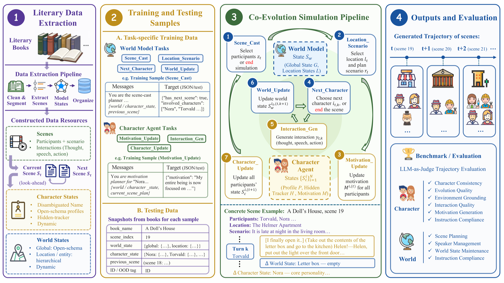

EMNLP 2026
Literary worlds
that remember and evolve.
An open-schema framework where Character Agents and a World Model co-evolve through interaction—scene after scene.
Persistent co-evolution
& interactions
actions reshape the world
world changes shape characters
& persistent state
Core design
Beyond static personas
and passive backdrops.
Co-evolution
Every interaction can leave a lasting trace on both characters and their world.
Open schema
Book-specific dimensions adapt automatically across radically different literary worlds.
Hidden tracker
Weak evidence accumulates before slower traits evolve, enabling multiple timescales.
The motivation
A believable interactive world is more than a cast of convincing personas. Interactions should reshape characters, locations, entities, and even the world setting—and those changes should persist into what happens next.
Built for
Interactive fiction · AI teammates · Open-world games
Demo
Watch a world
continue to unfold.
Starting from a literary snapshot, EvolvingWorld plans scenes, generates multi-character interactions, and updates persistent character and world states along the trajectory.
Demo film02:25
Framework
From books to
evolving worlds.
Seven trainable tasks connect literary data extraction, scene planning, interaction generation, and persistent state updates.

Evidence
Data that teaches
world evolution.
Book-to-world supervision consistently improves both Character Agents and World Models across model families, scales, and unseen books.
World Model · Average score59.87
The EvolvingWorld-trained 32B Qwen model surpasses Claude-4.6-Sonnet and Gemini-2.5-Flash on World Model evaluation.
Effective across scales
Training gains hold across Qwen and Llama backbones, including out-of-distribution books.
Both modules matter
Ablations show character updates and world updates support distinct—and coupled—parts of evolution.
Less degradation
Co-evolving structured states mitigate profile drift and scene-continuity decay over longer trajectories.
Citation
Build on
EvolvingWorld.
@article{zong2026evolvingworld,
title={EvolvingWorld: An Open-Schema Framework for Co-Evolving Role-Play Agents and World Model in Interactive Literary World},
author={Zong, Qing and Guo, Yue and Yang, Mengxin and Guo, Yiwen and Song, Yangqiu},
journal={arXiv preprint arXiv:2607.17250},
year={2026}
}